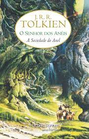
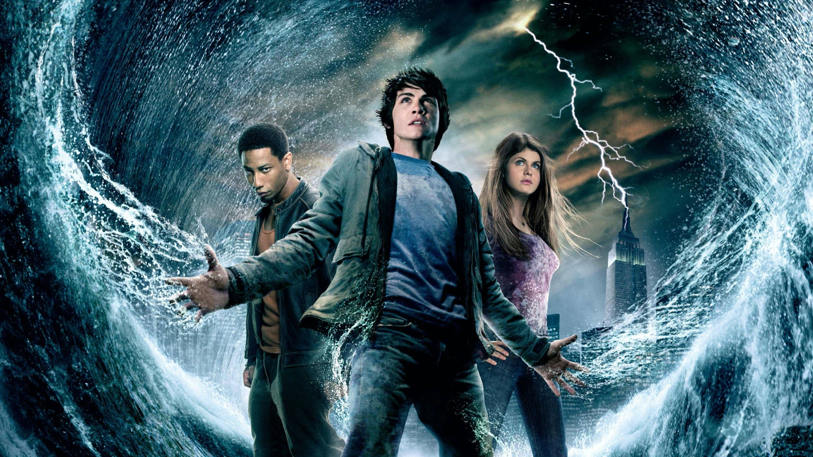
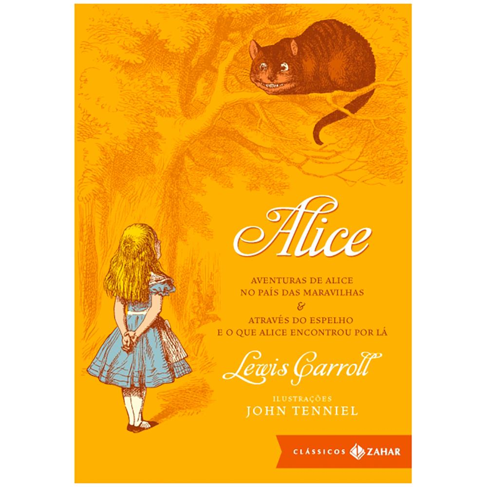
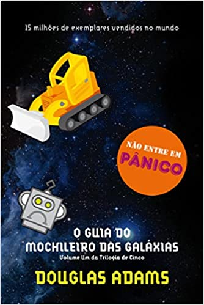

Estante de livros
Sua Biblioteca à um Clique de Distância
Harry Potter e a Pedra Filosofal

SINOPSE
Harry Potter nunca tinha ouvido falar em Hogwarts até o momento em que as CARTAS
começam a aparecer no capacho do número 4 da sua rua dos Alfeneiros.Endereçadas com um LACRE PÚRPURA,
elas são rapidamente confiscadas por seus tios TERRÍVEIS.
E então, no décimo primeiro aniversário de Harry, um homem GIGANTESCO
com olhos luzindo como bezouros negros chamado RÚBEO HAGRID
entra intempestivamente com uma notícia ASSOMBROSA:
Harry Potter é um bruxo e tem uma vaga na ESCOLA DE MAGIA E BRUXARIA DE HOGWARTS.
Uma aventura inacreditável está para começar!
Fonte Google Books
| Data da primeira publicação |
Autor |
Idioma Original |
Gênero |
| 26 Junho 1997
| J.K. Rowling |
Inglês |
Romance, Literatura Fantástica, Alta Fantasia |
Senhor dos Anéis: A Socidade do Ánel

SINOPSE
Numa terra fantástica e única, chamada Terra-Média, um hobbit
(seres de estaura entre 80cm e 1,20, com pés peludos e bochechas um pouco avermelhadas)
recebe de presente de seu tio Um Anel, um artefato mágico e maligno
que precisa ser detruído antes que caia nas mãos do mal.
Para cumprir sua missão, Frodo terá um caminho árduo pela frente,
e ao seu lado estarão outros hobbits, um elfo, um anão, dois humanos e um mago: a Sociedade do Anel.
Fonte: Gloogle Books
| Data da primeira publicação |
Autor |
Idioma Original |
Gênero |
| 28 de Junho de 1954 |
J.R.R Tolkien |
Inglês |
Aventura, Drama, Fantasia |
Percy Jackson e o Ladrão de Raios

SINOPSE
Percy Jackson (Logan Lerman) é um jovem que enfrenta problemas na escola,
devido ao que acredita ser dislexia e déficit de atenção.
Ele foi criado por sua mãe, Sally (Catherine Keener), e vive com Gabe Ugliano (Joe Pantoliano), seu padrasto, que odeia.
Após ser atacado em plena excursão escolar, é revelado a Percy que ele é um semideus,
ou seja, filho do deus Poseidon (Kevin McKidd) com uma humana, e possui poderes.
Protegido por Grover Underwood (Brandon T. Jackson), ele é levado ao acampamento dos meio sangue, onde está em segurança.
Lá ele tem (Pierce Brosnan) como tutor e passa a treinar para se tornar um grande guerreiro.
Só que Percy é acusado de ter roubado o raio de Zeus (Sean Bean), uma poderosa arma de destruição
que pode fazer com que os deuses entrem em guerra. É quando Hades (Steve Coogan)
visita o acampamento e oferece a Percy uma troca: que ele entregue o raio, o qual não possui,
em troca da devolução de sua mãe, que faleceu em meio à fuga.
Ele então parte para chegar ao Mundo Inferior, onde vivem Hades e Perséfone (Rosario Dawson),
juntamente com Grover e Annabeth Chase (Alexandra Daddario), uma poderosa guerreira que conheceu no acampamento.
Fonte: Google Books
| Data da primeira publicação |
Autor |
Idioma Original |
Gênero |
| 28 de Junho de 2005 |
Rick Riordan |
Inglês |
Mitologia Grega, Romance, Ficção Juvenil |
Alice no País das Maravilhas

SINOPSE
Ainda garotinha, Alice Kingsleigh visitou um lugar mágico
pela primeira vez e não tinha mais lembranças sobre o local a não ser em seus sonhos.
Em uma festa da nobreza, a jovem vê um coelho branco.
Alice o segue e cai em um buraco, indo parar em um mundo estranho:
o País das Maravilhas. Lá, ela reencontra personagens que estavam guardados em sua memória através dos sonhos.
Fonte: Google Books
| Data da primeira publicação |
Autor |
Idioma Original |
Gênero |
| 4 de Julho de 1865 |
Charles Lutwidge Dodgson |
Inglês |
Aventura, Fntasia, Infantil, Ficção científica |
O Guia Mochileiro das Galáxias

SINOPSE
Arthur Dent e seus quatro estranhos companheiros viajam pela Galáxia
a bordo da nave Coração de Ouro, em uma busca desesperada por algum lugar para comer.
Depois de fazer a refeição mais estranha de suas vidas,
eles seguem pelo espaço e acabam descobrindo a questão sobre a Vida, o Universo e Tudo Mais
Fonte: Google Books
| Data da primeira publicação |
Autor |
Idioma de Origem |
Gênero |
| 1979 e 1992 |
Douglas Adms |
Inglês |
Ficção científica, Romance, Humor, Ficção científica cômica, Ficção humorística |